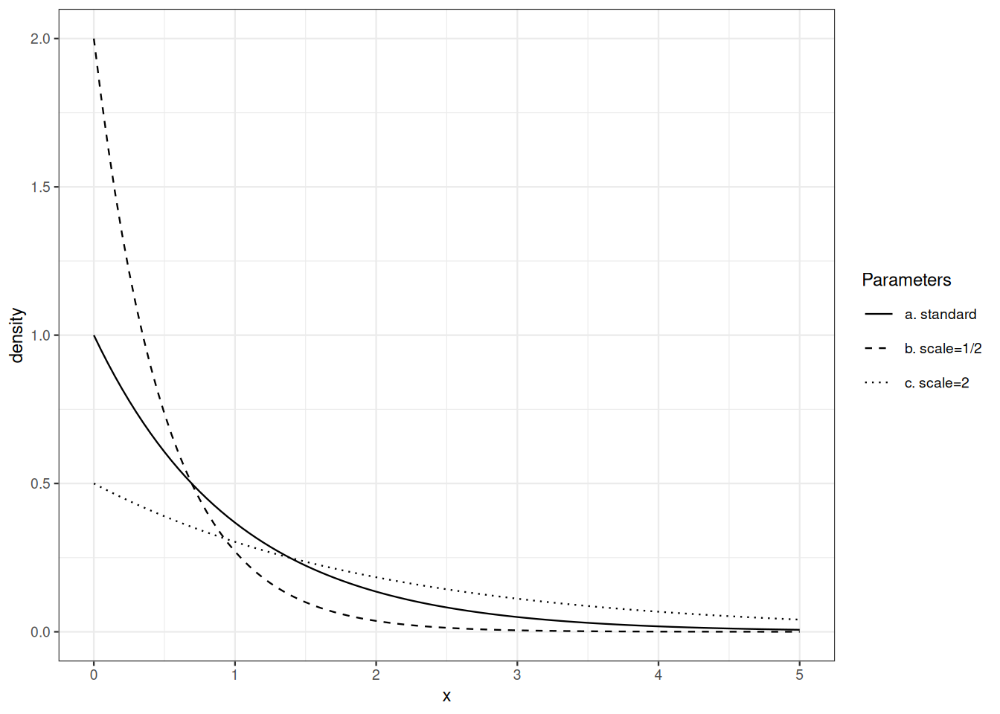
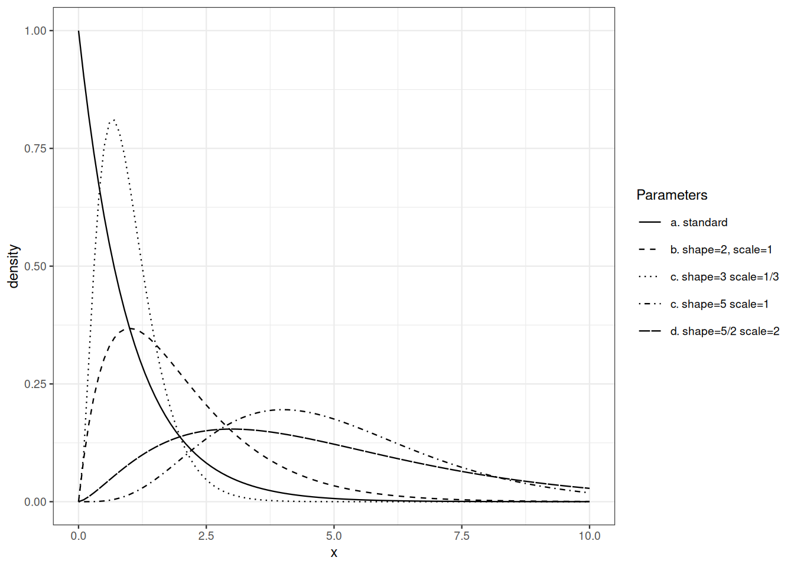
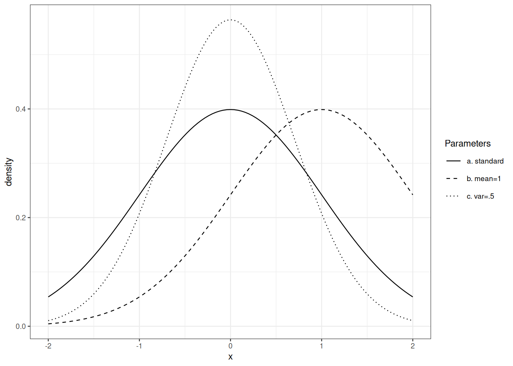

variance equals squared scale.
Au-delà des lois discrètes, les lois de probabilité les plus simples sont définies par une fonction de densité par rapport à une mesure (\(\sigma\)-finie). Cela englobe les lois des soi-disant variables aléatoires continues.
Définition 9.1 (Continuité absolue) Soient \(\mu, \nu\) deux mesures positives sur l’espace mesurable \((\Omega, \mathcal{F})\). On dit que \(\mu\) est absolument continue par rapport à \(\nu\) (noté \(\mu \trianglelefteq \nu\)) si et seulement si, pour tout \(A \in \mathcal{F}\) avec \(\nu(A)=0\), on a aussi \(\mu(A)=0\).
Si \(\mu, \nu\) sont deux lois de probabilité et si \(\mu \trianglelefteq \nu\), alors tout événement impossible sous \(\nu\) est aussi impossible sous \(\mu\).
Exercice 9.1 Répondre aux deux questions :
Exercice 9.2 Vérifier que la continuité absolue est une relation transitive.
Le théorème suivant a des conséquences pratiques de grande portée.
Théorème 9.1 (Radon-Nikodym) Soient \(\mu, \nu\) deux mesures positives sur l’espace mesurable \((\Omega, \mathcal{F})\). Supposons que \(\nu\) soit \(\sigma\)-finie. Si \(\mu \trianglelefteq \nu\), alors il existe une fonction mesurable \(f\) de \(\Omega\) vers \([0, \infty)\) telle que, pour tout \(A \in \mathcal{F}\), \[ \mu(A) = \int_A f(\omega) \mathrm{d}\nu(\omega) = \int \mathbb{I}_A f \mathrm{d}\nu \, . \] La fonction \(f\) est appelée une version de la densité de \(\mu\) par rapport à \(\nu\).
La densité est aussi appelée la dérivée de Radon-Nikodym de \(\mu\) par rapport à \(\nu\). Elle est parfois notée \(\frac{\mathrm{d}\mu}{\mathrm{d}\nu}\).
Remarque 9.1. L’hypothèse de \(\sigma\)-finité est cruciale. Si nous choisissons \(\mu\) comme mesure de Lebesgue et \(\nu\) comme mesure de comptage, \(\nu\) n’est pas \(\sigma\)-finie ; \(\mu(A)>0\) implique \(\nu(A)=\infty\), que l’on peut considérer comme strictement supérieur à \(0\). Néanmoins, la mesure de Lebesgue n’a pas de densité par rapport à la mesure de comptage.
Dans les sections suivantes, nous étudions les lois de probabilité sur \((\mathbb{R}, \mathcal{B}(\mathbb{R}))\) qui sont absolument continues par rapport à la mesure de Lebesgue.
Proposition 9.1 Si \(\rho \trianglelefteq \mu \trianglelefteq \nu\), si \(f\) est une densité de \(\rho\) par rapport à \(\mu\) tandis que \(g\) est une densité de \(\mu\) par rapport à \(\nu\), alors \(fg\) est une densité de \(\rho\) par rapport à \(\nu\).
Exercice 9.3 Démontrer la proposition 9.1.
La loi exponentielle apparaît dans plusieurs domaines des probabilités et de la statistique. En théorie de la fiabilité, sa propriété d’absence de mémoire en fait un cas limite. En théorie des processus ponctuels, la loi exponentielle est liée aux processus de Poisson. Elle est aussi importante en théorie des valeurs extrêmes.
La loi exponentielle de paramètre d’intensité \(\lambda>0\) est définie par sa densité par rapport à la mesure de Lebesgue sur \([0,\infty)\) : \[ x \mapsto \lambda \mathrm{e}^{-\lambda x} \, . \] L’inverse du paramètre d’intensité est appelé le paramètre d’échelle.
Notez que les lois géométrique et exponentielle sont liées : si \(X\) suit une loi exponentielle, alors \(\lceil X\rceil\) suit une loi géométrique. Pour \(k\geq 1\) : \[ P \Big\{ \lceil X \rceil \geq k \Big\} = P \Big\{ X > k - 1 \Big\} = \mathrm{e}^{- \lambda (k-1)} \, . \]
Exercice 9.4 Vérifier que \(x \mapsto \lambda \mathrm{e}^{-\lambda x}\) est une densité de probabilité sur \([0, \infty)\).
Exercice 9.5 Calculer la fonction de queue et la fonction de répartition de la loi exponentielle de paramètre \(\lambda\).
Exercice 9.6 Soient \(X_1, \ldots, X_n\) des variables i.i.d. de loi exponentielle. Caractériser la loi de \(\min(X_1, \ldots, X_n)\).
Si \(X\) suit une loi exponentielle de paramètre d’échelle \(\sigma\), quelle est la loi de \(a X\) ?

Les sommes de variables aléatoires exponentielles indépendantes ne suivent pas une loi exponentielle. La famille des lois gamma englobe la famille des lois exponentielles. Elle est stable par addition et satisfait
Rappelons la fonction gamma d’Euler : \[ \Gamma(t) = \int_0^\infty x^{t-1}\mathrm{e}^{-x} \mathrm{d}x \qquad \text{for } t>0\, . \]
La loi gamma de paramètre de forme \(p>0\) et de paramètre d’intensité \(\lambda>0\) est définie par sa densité par rapport à la mesure de Lebesgue sur \([0,\infty)\) : \[ x \mapsto \lambda^p \frac{x^{p-1}}{\Gamma(p)} \mathrm{e}^{-\lambda x} \, . \] L’inverse du paramètre d’intensité est appelé le paramètre d’échelle.
Exercice 9.7 Vérifier que \(x \mapsto \lambda^p \frac{x^{p-1}}{\Gamma(p)} \mathrm{e}^{-\lambda x}\) est une densité de probabilité sur \([0, \infty)\).
Exercice 9.8 Si \(X\) suit une loi gamma de paramètre de forme \(p\) et de paramètre d’échelle \(\sigma\), quelle est la loi de \(a X\) ?

Les lois gaussiennes jouent un rôle central en théorie des probabilités, en statistique, en théorie de l’information et en analyse.
La loi gaussienne ou normale de moyenne \(\mu \in \mathbb{R}\) et de variance \(\sigma^2\), \(\sigma>0\), a pour densité \[ x \mapsto \frac{1}{\sqrt{2 \pi} \sigma} \mathrm{e}^{- \frac{(x-\mu)^2}{2 \sigma^2}} \qquad\text{for } x \in \mathbb{R} \, . \] La densité gaussienne standard est définie par \(\mu=0, \sigma=1\).
Exercice 9.9 Vérifier que \(x \mapsto \frac{\mathrm{e}^{-x^2/2}}{\sqrt{2\pi}}\) est une densité de probabilité sur \(\mathbb{R}\).
Exercice 9.10 Si \(X\) suit une densité gaussienne standard, quelle est la loi de \(\mu + \sigma X\) ?
Exercice 9.11 Si \(X\) suit une densité gaussienne standard, montrer que \[ \Pr \{ X > t \} \leq \frac{1}{t} \frac{\mathrm{e}^{-t^2/2}}{\sqrt{2\pi}} \qquad\text{for } t>0\,. \]

Si une fonction de répartition est définie comme l’intégrale d’une fonction Lebesgue-intégrable non négative, nous savons que la loi de probabilité correspondante est absolument continue par rapport à la mesure de Lebesgue.
Nous pouvons demander un critère qui caractérise la fonction de répartition d’une loi de probabilité absolument continue. Un tel critère est donné par la définition suivante. Nous surchargeons l’expression absolument continue.
Définition 9.2 (Fonctions absolument continues) Une fonction réelle \(F\) sur \([a,b]\) est dite absolument continue si et seulement si, pour tout \(\delta>0\), il existe \(\epsilon>0\) tel que, pour toute collection \(([a_i, b_i])_{i\leq n}\) de sous-intervalles non chevauchants (\([a_i,b_i] ⊆ [a,b]\) pour tout \(i\leq n\) et \(\ell([a_i,b_i] \cap [a_j,b_j])=0\) pour \(i\neq j\)) avec \(∑_{i\leq n} |b_i-a_i|\leq ϵ\), \[∑_{i\leq n} |F(b_i)-F(a_i)|\leq δ\]
La continuité absolue, la différentiabilité et l’intégration des dérivées sont reliées par le théorème suivant. Ce théorème nous dit qu’une fonction de répartition est absolument continue au sens de la Définition Définition 9.2 si et seulement si la loi de probabilité correspondante est absolument continue par rapport à la mesure de Lebesgue.
Théorème 9.2 (Théorème fondamental du calcul) Une fonction réelle \(F\) sur \([a,b]\) est absolument continue si et seulement si les trois conditions suivantes sont satisfaites :
Rappelons la formule de changement de variable du calcul élémentaire. Si \(\phi\) est croissante strictement et différentiable de l’ouvert \(A\) vers \(B\) et si \(f\) est Riemann-intégrable sur \(B\), alors \[ \int_B f(y) \, \mathrm{d}y = \int_A f(\phi(x)) \, \phi^{\prime}(x) \, \mathrm{d}x \, \]
Exercice 9.12 Vérifier la formule élémentaire de changement de variable.
L’objectif de cette section est d’énoncer une généralisation multidimensionnelle de cette formule élémentaire. C’est le contenu du Théorème 9.4). Cette extension est ensuite utilisée pour établir une formule toute faite pour calculer la densité d’une loi image dans le Théorème 9.5).
Commençons par un échauffement unidimensionnel. En partant de la loi uniforme sur \([0,1]\) et en appliquant une transformation monotone différentiable, la densité de la loi image se calcule aisément.
Exercice 9.13 Soit \(\phi\) différentiable et croissante sur \([0,1]\), et soit \(P\) la loi uniforme sur \([0,1]\).
Vérifier que \(P \circ \phi^{-1}\) a pour densité \(\frac{1}{\phi'\circ \phi^\leftarrow}\) sur \(\phi([0,1])\).
La proposition suivante étend cette observation.
Si la variable aléatoire réelle \(X\) suit la loi \(P\) de densité \(f\), et si \(\phi\) est monotone croissante et différentiable sur \(\operatorname{supp}(P)\), alors la loi de probabilité de \(Y = \phi(X)\) a pour densité \[ g = \frac{f \circ \phi^{\leftarrow}}{\phi^{\prime}\circ \phi^{\leftarrow}} \, \] sur \(\phi\big(\operatorname{supp}(P)\big)\).
Preuve. Par le théorème fondamental du calcul, la densité \(f\) est presque partout la dérivée de la fonction de répartition \(F\) de \(P\).
La fonction de répartition de \(Y=\phi(X)\) satisfait : \[\begin{align*} P \Big\{ Y \leq y \Big\} & = P \Big\{ \phi(X) \leq y \Big\} \\ & = P \Big\{ X \leq \phi^{\leftarrow} (y) \Big\} \\ & = F \circ \phi^{\leftarrow}(y) \end{align*}\] Presque partout, \(F \circ \phi^{\leftarrow}\) est différentiable et a pour dérivée \(\frac{f \circ \phi^{\leftarrow}}{\phi' \circ \phi^{\leftarrow}}\) dans \(\phi(\text{supp}(P))\), et \(0\) ailleurs. Ainsi \[ P \Big\{ Y \leq y \Big\} = \int_{(-\infty, y] \cap \phi(\text{supp}(P))} \frac{f \circ \phi^{\leftarrow}(u)}{\phi' \circ \phi^{\leftarrow}(u)} \mathrm{d}u \]
Le corollaire suivant est aussi utile que simple.
Corollaire 9.1 Si la loi de la variable aléatoire réelle \(X\) a pour densité \(f\), alors la loi de \(\sigma X + \mu\) a pour densité \(\frac{1}{\sigma}f\Big(\frac{\cdot -\mu}{\sigma}\Big)\), .
En calcul univarié, il est facile d’établir que si une fonction est continue et croissante sur un ouvert, elle est inversible et son inverse est continu et croissant. Si la fonction est différentiable avec dérivée strictement positive, son inverse est aussi différentiable. De plus, la différentielle et la différentielle de l’inverse sont reliées de manière transparente.
Le théorème d’inversion globale étend l’observation précédente au cadre multivarié.
Théorème 9.3 (Théorème d’inversion globale) Soient \(U\) et \(V\) deux ouverts non vides de \(\mathbb{R}^d\). Soit \(\phi\) une bijection continue de \(U\) vers \(V\). Supposons de plus que \(\phi\) soit continûment différentiable et que \(D\phi_x\) soit non singulière en tout \(x \in U\).
Alors, la fonction inverse \(\phi^{\leftarrow}\) est aussi continûment différentiable sur \(V\) et, pour tout \(y \in V\) : \[ D\phi^{\leftarrow}_y = \Big(D\phi_{\phi^{\leftarrow}(y)} \Big)^{-1} \, . \]
Le déterminant jacobien de \(\phi\) est le déterminant de la matrice qui représente la différentielle. Il est noté \(J_\phi\). Rappelons que : \[ J_{\phi^{\leftarrow}}(y) = \Big(J_{\phi}(\phi^{\leftarrow}(y)) \Big)^{-1} \, . \] La version multidimensionnelle de la formule de changement de variable est énoncée sous les mêmes hypothèses que le théorème d’inversion globale. Nous admettons le théorème suivant.
Théorème 9.4 (Formule géométrique de changement de variable) Soient \(U\) et \(V\) deux ouverts non vides de \(\mathbb{R}^d\). Soit \(\phi\) une bijection continue de \(U\) vers \(V\). Supposons de plus que \(\phi\) soit continûment différentiable et que \(D\phi_x\) soit non singulière en tout \(x \in U\).
Soit \(\ell\) la mesure de Lebesgue sur \(\mathbb{R}^d\).
Pour toute fonction borélienne mesurable \(f\) non négative : \[ \int_U f(x) \mathrm{d}\ell(x) = \int f(\phi^\leftarrow(y)) \Big|J_{\phi^\leftarrow}(y) \Big| \mathrm{d}\ell(y) \, . \]
Le passage des coordonnées cartésiennes aux coordonnées polaires/sphériques est facilité par une application non triviale du Théorème 9.4).
La formule de densité image est un corollaire de la formule géométrique de changement de variable.
Théorème 9.5 (Formule de densité image) Soit \(P\) de densité \(f\) sur l’ouvert \(U \subseteq \mathbb{R}^d\).
Soit \(\phi\) bijective de \(U\) vers \(\phi(U)\) et continûment différentiable sur \(U\) avec différentielle non singulière.
La densité \(g\) de la loi image \(P \circ \phi^{-1}\) sur \(\phi(U)\) est donnée par \[ g(y) = f\big(\phi^\leftarrow(y)\big) \times \big|J_{\phi^\leftarrow}(y)\big| = f\big(\phi^\leftarrow(y)\big) \times \Big|J_{\phi}(\phi^\leftarrow(y))\Big|^{-1}\, . \]
La preuve du Théorème 9.5) à partir du Théorème 9.4) est une application routine de la formule de transfert.
Preuve. Soit \(B\) un sous-ensemble borélien de \(\phi(U)\). Par la formule de transfert : \[\begin{align*} P\Big\{ Y \in B \Big\} & = P\Big\{ \phi(X) \in B \Big\} \\ & = \int_U \mathbb{I}_B(\phi(x)) f(x) \mathrm{d}\ell(x) \,. \end{align*}\] Invoquons maintenant le Théorème 9.4) : \[\begin{align*} \int_U \mathbb{I}_B(\phi(x)) f(x) \mathrm{d}\ell(x) & = \int_{\phi(U)} \mathbb{I}_B(\phi(\phi^\leftarrow(y))) f(\phi^\leftarrow(y)) \Big|J_{\phi^\leftarrow}(y)\Big| \mathrm{d}\ell(y) \\ & = \int_{\phi(U)} \mathbb{I}_B(y) f(\phi^\leftarrow(y)) \Big|J_{\phi^\leftarrow}(y)\Big| \mathrm{d}\ell(y) \, . \end{align*}\] Cela suffit pour conclure que \(f\circ \phi^\leftarrow \Big|J_{\phi^\leftarrow}\Big|\) est une version de la densité de \(P \circ \phi^{-1}\) par rapport à la mesure de Lebesgue sur \(\phi(U)\).
La formule de densité image est appliquée pour montrer un lien remarquable entre les lois gamma et bêta.
Proposition 9.2 Soient \(X, Y\) des variables aléatoires indépendantes de lois \(\Gamma(p, \lambda)\) et \(\Gamma(q, \lambda)\) (les paramètres d’intensité sont identiques). Posons \(U = X+Y\) et \(V= X/(X+Y)\).
Alors
Preuve. L’application \(f: ]0, \infty)^2 \to ]0, \infty) \times ]0,1[\) définie par \[ f(x,y) = \Big(x+y, \frac{x}{x+y} \Big) \] est bijective, d’inverse \(f^{\leftarrow}(u,v) = \Big(uv,u(1-v)\Big)\). La matrice jacobienne de \(f^{\leftarrow}\) en \((u,v)\) est \[ \begin{pmatrix} v & u \\ (1-v) & -u \end{pmatrix} \] de déterminant \(-uv -u +uv=-u\). La densité jointe image en \((u,v) \in ]0,\infty) \times ]0,1[\) vaut \[\begin{align*} & = \lambda^{p+q}\frac{(uv)^{p-1}}{\Gamma(p)} \frac{(u(1-v))^{q-1}}{\Gamma(q)} \mathrm{e}^{-\lambda (uv + u(1-v))} u \\ & = \Big(\lambda^{p+q} \frac{u^{p+q-1}}{\Gamma(p+q)} \mathrm{e}^{\lambda u}\Big) \times \Big(\frac{\Gamma(p+q)}{\Gamma(q)\Gamma(p)} v^{p-1} (1-v)^{q-1}\Big) \,. \end{align*}\] La factorisation de la densité jointe prouve que \(U\) et \(V\) sont indépendants. Nous reconnaissons que la densité de (la loi de) \(U\) est la densité gamma de paramètre de forme \(p+q\) et de paramètre d’intensité \(\lambda\). La densité de la loi de \(V\) est la densité bêta de paramètres \(p\) et \(q\).
Exercice 9.14 Supposons que \(X_1, X_2, \ldots, X_n\) forment une famille indépendante, chaque \(X_i\) suivant la loi \(\Gamma(p_i, \lambda)\).
Déterminer la loi jointe de \[ \sum_{i=1}^n X_i, \frac{X_1}{\sum_{i=1}^n X_i}, \frac{X_2}{\sum_{i=1}^n X_i}, \ldots, \frac{X_{n-1}}{\sum_{i=1}^n X_i} \]
Dudley (2002) et Pollard (2002) fournissent un développement complet de la continuité absolue et des preuves autonomes du théorème de Radon-Nikodym.